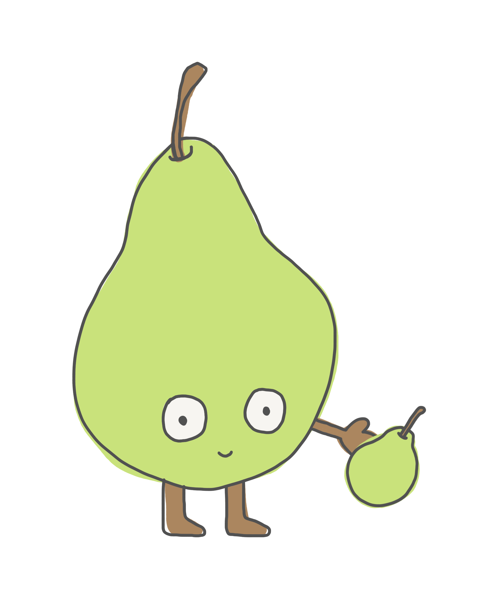

Welcome to William Shakes Pear
This website is a UX experiment that blends Shakespeare’s universe with a single, very confused pear. Explore plays, poems, and sonnets; search for lines and words; and see how far one fruit can go in the world of classic literature.